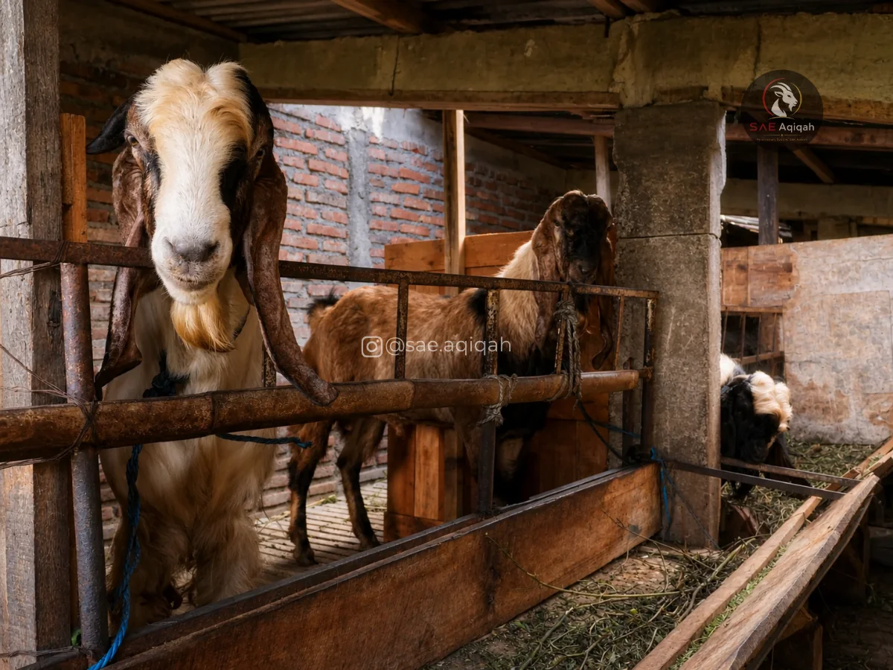
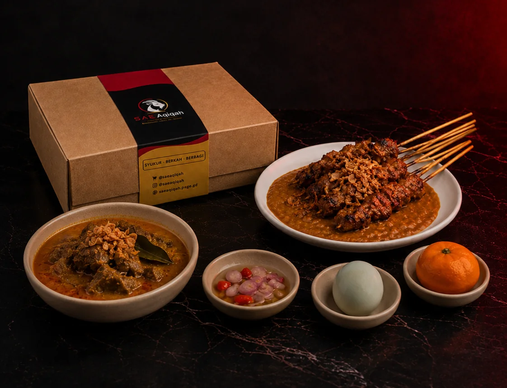
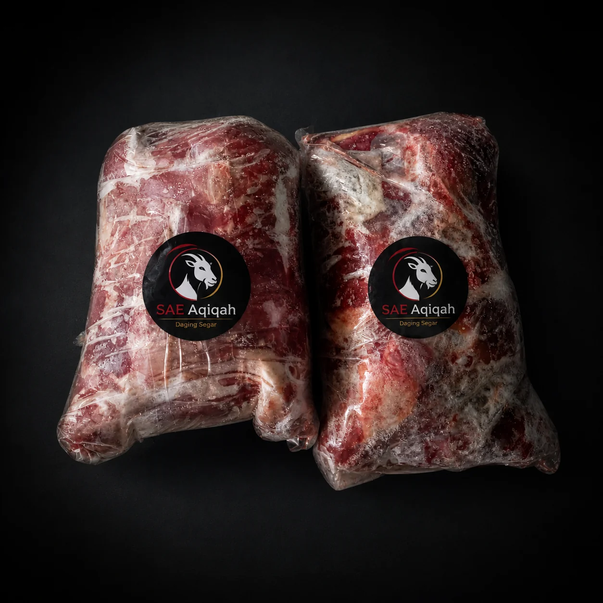

Sempurna Syariatnya,
Premium Sajiannya
Sejak 2004, kami berbisnis di sektor peternakan dan perdagangan komoditas kambing, dan pada tahun 2016 kami mulai menyediakan layanan katering aqiqah Malang premium syar'i, jual kambing hidup, serta menjadi supplier daging kambing segar harian berkualitas tinggi untuk restoran dan katering di Jawa Timur.
Dua Dekade Menjaga Kepercayaan
Berawal dari Rumah Aqiqah Tegalgondo di Malang, perjalanan selama lebih dari 20 tahun telah membentuk kami menjadi katering aqiqah malang syar'i dan supplier daging kambing terpercaya di Jawa Timur.
Kami percaya bahwa ibadah yang sempurna bermula dari proses yang penuh integritas. Kami mengelola peternakan secara mandiri untuk menjamin keabsahan dan kebersihan setiap hewan. Di SAE Aqiqah, kami menyelaraskan kesempurnaan syariat fiqih dengan cita rasa kuliner kelas bintang lima yang dikemas eksklusif.

Syar'i
Tata cara pemilihan, batas umur, hingga penyembelihan 100% mengikuti kaidah fiqih sunnah tanpa kompromi.
Amanah
Menjunjung tinggi transparansi total. Kandang kami selalu terbuka untuk Anda datangi, pilih, dan saksikan prosesnya.
Excellent
Standar kualitas premium di setiap aspek—dari kesehatan hewan, rasa hidangan, hingga kemasan eksklusif.
Solusi Hewan & Daging Premium

Layanan Aqiqah Premium (B2C)
Paket Aqiqah lengkap untuk putra-putri tercinta. Pilih kambing langsung di kandang kami, saksikan penyembelihannya secara langsung, dan nikmati sajian katering khas bintang lima dengan kemasan doff premium hitam.
Pesan Paket Aqiqah (B2C)Penyediaan Kambing Hidup
Menyediakan kambing hidup sehat, cukup umur (poel), dan berkualitas. Dengan kapasitas kandang mandiri yang stabil, kami siap memenuhi kebutuhan aqiqah dan qurban Anda sepanjang tahun.

Kemitraan Daging Segar B2B
Kami adalah supplier daging kambing malang tepercaya yang memasok karkas, daging segar, serta kepala dan kaki kambing harian untuk warung sate, restoran, hotel, dan katering dengan harga grosir kompetitif.
Ajukan Kemitraan Daging (B2B)Mengapa Memilih SAE Aqiqah?
Integritas dan dedikasi hulu-ke-hilir adalah alasan mengapa kami tetap menjadi pilihan utama masyarakat Jawa Timur selama 20 tahun.
Fasilitas Peternakan Mandiri
Kami mengelola peternakan kami sendiri secara penuh, memastikan setiap tahap perawatan hewan diawasi dengan dedikasi tinggi guna menghadirkan kualitas terbaik langsung ke lokasi Anda tanpa perantara.
Keterbukaan & Kepercayaan (Transparansi)
Bagi kami, ketenangan hati Anda adalah prioritas utama. Kami selalu menyambut hangat kehadiran Anda untuk melihat langsung seluruh proses kami yang 100% transparan dan dijalankan sesuai dengan kaidah syariat.
Warisan Pengalaman 20 Tahun
Dua dekade melayani keluarga dan mitra bisnis telah mendewasakan kami dalam menjaga rantai pasok yang andal. Kami memahami betul bagaimana menghadirkan standar mutu layanan yang konsisten dari waktu ke waktu.